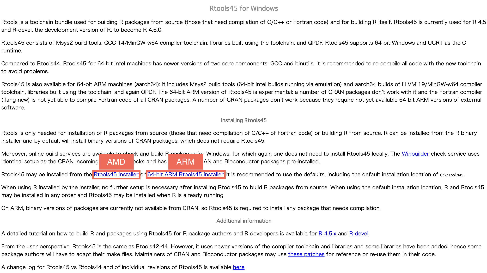
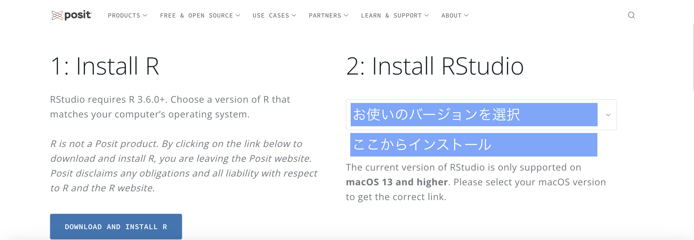

Windows 11 インストールガイド
以下の手順に従って、データ分析環境をセットアップしてください。
1
プロセッサの種類の確認
まず、お使いのコンピュータがAMD/Intel (標準) か ARM プロセッサのどちらを使用しているかを確認する必要があります。これにより、インストールするRtoolsのバージョンが決まります。
方法 1: 設定画面 (推奨)
- 設定 > システム > バージョン情報 を開きます。
- デバイスの仕様にある「システムの種類」を確認してください。
確認ポイント:
「x64 ベース プロセッサ」と書かれていれば、AMD/Intel です。
「ARM ベース プロセッサ」と書かれていれば、ARM です。
「x64 ベース プロセッサ」と書かれていれば、AMD/Intel です。
「ARM ベース プロセッサ」と書かれていれば、ARM です。
方法 2: PowerShell (上級者向け)
PowerShellで以下のコマンドを実行してください:
$Env:PROCESSOR_ARCHITECTURE
出力が 'AMD64' なら AMD/Intel です。'ARM64' なら ARM です。
2
Rのインストール
CRAN (Comprehensive R Archive Network) から最新版のRをダウンロードします。

注意: ページ上部の "Download R x.x.x for Windows"
というリンクをクリックしてください。インストーラーを実行し、すべての設定をデフォルトのままで進めてください。
3
Rtoolsのインストール
RのパッケージをソースからコンパイルするためにRtoolsが必要です。
正しいバージョンを選択してください:

- AMD/Intel (x64) の場合:
Rtools44-x86_64.exe(またはお使いのRに対応する最新版) をダウンロードしてください。 - ARM (ARM64) の場合:
Rtools44-aarch64.exeをダウンロードしてください。
インストーラーを実行し、指示に従ってください。設定はデフォルトのままで構いません。
4
RStudioのインストール
RStudioはRコードを書くための便利なインターフェースです。
"2: Install RStudio" までスクロールし、Windows用のダウンロードボタンをクリックしてください。
5
設定の構成
パイプ演算子のショートカット (Ctrl + Shift + M) で %>%
が入力されるように設定します。
- RStudioを開きます。
- メニューバーの Tools > Global Options を開きます。
- サイドバーの Code を選択します。
- "Use native pipe operator |> (requires R 4.1+)" のチェックが外れていることを確認してください。
- Apply をクリックし、OK をクリックします。
6
パッケージのインストール
他のツールを高速にインストールするために pak パッケージを使用します。
以下のコードをRStudioの Console ペイン（通常は左下）にコピー＆ペーストし、Enter キーを押してください。
1. pakのインストール:install.packages("pak")
pak::pkg_install(c(
"skimr",
"comorbidity",
"broom",
"tidyverse",
"here",
"openxlsx",
"tableone",
"gtsummary",
"broom.helpers",
"pacman"
))
インストールが完了するまでお待ちください。数分かかる場合があります。